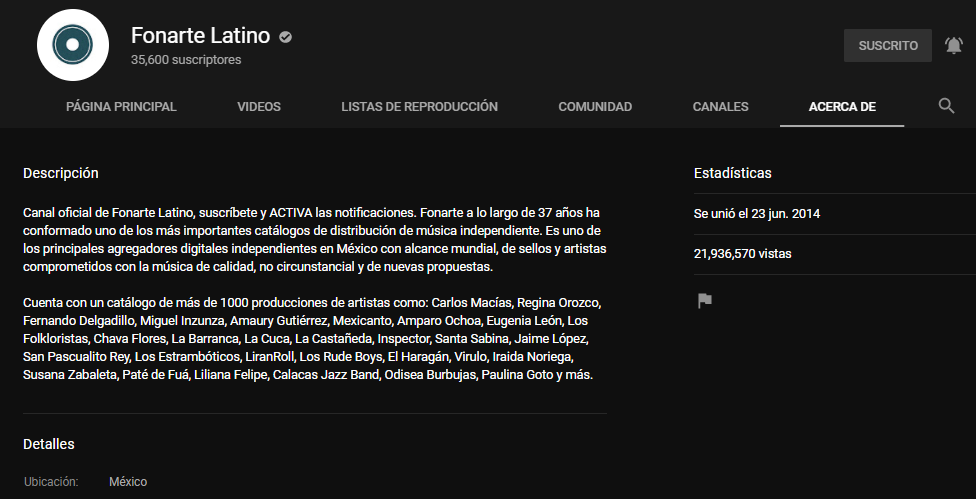
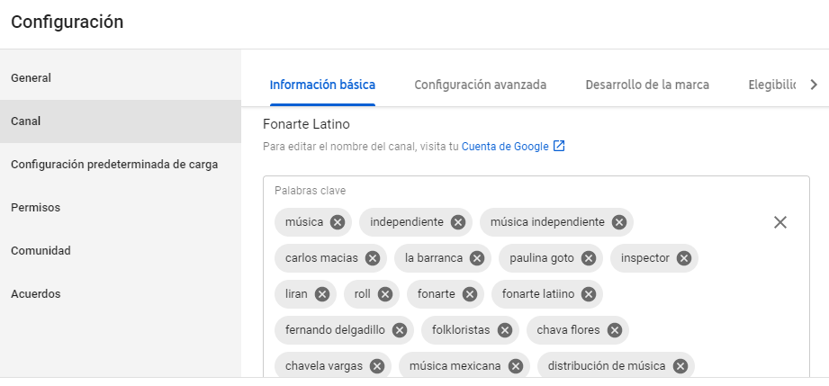
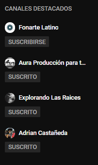
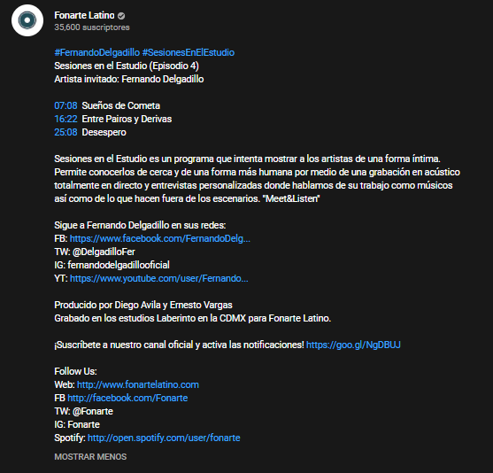

YOUTUBE BEST PRACTICES 2020
Traducido por: Allan Ibarra | Fecha : 11/Agosto/2020Optimización de Motores de Búsqueda
"Acerca de" la Página
En la plataforma YouTube se utiliza la pestaña "Acerca de" para completar el SEO (Search Egine Optimización = Optimización de Motores de Búsqueda), por lo que se recomienda agregar una biografía detallada y una descripción con términos clave con esto ayuda a YouTube a mostrar el canal más arriba en las búsquedas. Recuerde incluir la información mas relevante del artista, como sus canciones, nombres de álbumes, géneros, etiquetas, ubicaciones y cualquier otro término de búsqueda relevante para el artista. Es importante mantener la apariencia en todas las plataformas para la familiaridad y con ello garantizar que el canal se presenta a los fans como la fuente de contenido oficial del artista en YouTube.
Etiquetas de Canal
Al igual que las etiquetas de video, las etiquetas de canal ayudan a YouTube a mostrar el canal mas arriba en las búsquedas y en otras plataformas, como Google. Esto significa que entre más etiquetas se le ponga al canal, mayor la posibilidad de encontrar el contenido. Por ejemplo: errores ortográficos en títulos de canciones, álbumes, géneros, títulos de canciones, etc. mientras mas datos relevantes agregues es mejor.
Canales Destacado
Vincula los canales destacados en la pestaña "Canales" para promocionar sus otros contenidos y generar tráfico entre los canales.
URL Personalizada
Crear una URL personalizada les brinda a los fanáticos una manera fácil de recordar tu canal de YouTube. Debe ser algo claro y fácil de recordar como/NombreArtista/ArtistOfficial/LabelRecords/LabelMusic, etc. Para obtener más información sobre las URL personalizadas, siga este enlace.
Título
Los títulos de video brindan a los espectadores una idea de qué esperar del video y ayudan en el SEO e identifica el contenido de su video (p. Ej., "Audio oficial", "Detrás del Escenario", "Lyric Video" o "Live @ X"), los espectadores saben lo que están sintonizando y no abandonará el video después de ser engañado por el título. Para videos musicales, se recomienda "Artista - Canción (TYPE)".
Etiquetas
Añade más etiquetas a los videos, siempre que sigan siendo relevantes para el video. (llena todo el espacio). También es importante incluir palabras que se escriben mal así fácilmente la gente lo puede encontrar. Algunos otros ejemplos: nombres de artistas, álbumes, canciones, el año de lanzamiento, el género, la geografía, el tipo de video, etc.
Descripción
La descripción de cada video es otra forma en que YT puede mejorar el SEO para ayudar a encontrar tu video. En la descripción, repita la información del título, utilice hashtags que formen parte de una búsqueda más amplia, como "#NuevaMúsica, #Artista, #Álbum, #Género, #Evento" y reutilice todas las palabras clave importantes, un poco sobre el proyecto o artista en cuestión (si hay una gira o un nuevo lanzamiento en camino) y todos sus enlaces (a servicios de transmisión, redes sociales, suscribirse, el sitio web principal). Además, es importante utilizar palabras clave, especialmente en las dos primeras oraciones, ya que solo las dos primeras oraciones son mostrado en la búsqueda.
